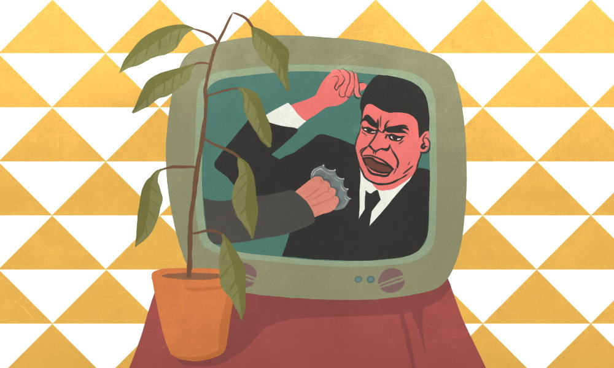
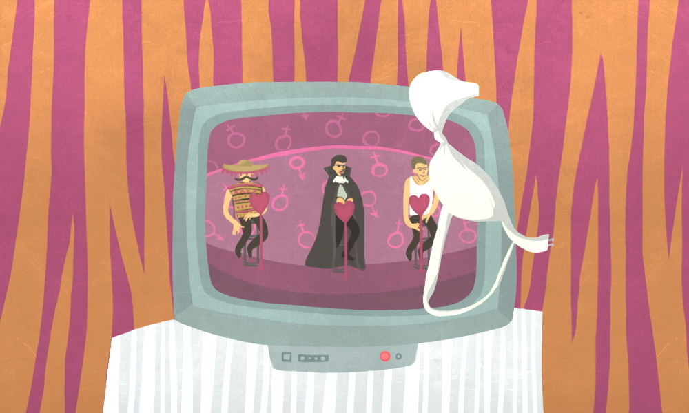

Чешский журнал А2 поговорил с режиссёром и главой пражской кафедры документального кино FAMU про упадок телевидения и трудности на пути его изменений. Как повысить качество общественных трансляций? Согласно знаменитому режиссёру, будущее принадлежит электронной демократии. Беседа коснулась также 60-х годов, цимрманского китча и современной политики.
Карел Вахэк (род. 1940) — чешский режиссёр и педагог, глава кафедры документальных исследований в FAMU. Окончил отделение игрового кино под руководством Эльмара Клоса. В период нормализацииПосле вторжения советских войск в 1968 году Чехословакия вступила в период «нормализации»: последующие руководители пытались восстановить политические и экономические ценности, преобладавшие до Пражской весны. по политическим причинам не мог снимать кино и работал водителем на заводе безалкогольных напитков. Снял документальные фильмы «Сплочённые выбором» (1968), «Новый Гиперион, или Свобода, Равенство, Братство» (1992), «Что делать?» (1996), «Богемия, или Лабиринт мира и люстгауз сердца» (2000), «Кто будет сторожить сторожа? Далибор, или Ключ к Хижине дяди Тома» (2002), «Завиш, принц порнофолка под влиянием Нетерпимости Гриффита и Каникул Тати господина Гулота, или Возникновение и упадок Чехословакии» (2006), «Мракобес и его род, или Слёзная долина пирамид» (2011). В настоящее время готовит новый фильм «Коммунизм — Неприличные мысли, или Революция за революцией!»
Когда мы пришли, у Вас работал телевизор. Что Вы обычно смотрите и почему?
Телевизор у меня включён практически постоянно. Он предоставляет мне вид, похожий на тот, который имел когда-то человек, положивший на подоконник подушку и глядевший на людей на улице, истории которых знал и предполагал их продолжение. Здесь, в микрорайоне, отсутствует улица, на которой происходит жизнь. Телевизор включён, даже когда я чем-то занят, потому что он добавляет ощущение, будто я нахожусь в большем пространстве. К тому же, телевизор показывает, что смотрят другие, и это значит, что он помогает лучше понимать людей. Поэтому каждый день я смотрю новости на разных каналах. Так я узнаю о людях массу глупостей, которые достаточно просто переместить в другой контекст, чтобы получить материал для сценария. Иногда я даже ворую у телевидения, ведь там полно невообразимых рож и происходят невероятные вещи.
Что должно случиться, чтобы телевидение стало действительно независимым?
Государство должно иметь другое законодательство, вы должны быть владельцем канала, и у вас должен быть образованный директор и граждане, добровольно оплачивающие эту услугу. В Нью-Йорке я когда-то смотрел 13-й канал c самыми лучшими политическими новостями, отличными концертами, замечательными фильмами и театральными постановками; там выступали люди, которых вы вряд ли увидели бы где-то ещё. Иногда на экране появлялись титры: «У нас осталось всего сто тысяч долларов, отправьте нам деньги». И зрители это делали. Там не показывали никакой ерунды, и предполагалось, что образованные люди эти деньги в самом деле отправят. Их политическая комментатор после выпуска скандальной передачи о русских в США оказалась вместе со своей машиной в реке Делавэр.
Что характерно для современного чешского общественного телевидения? Развлечения?
Практически одни развлечения. Наше общественно-правовое телевидение контролируется политиками и с правами общественности не имеет ничего общего. Это политизированное телевидение, и поскольку сейчас все делают вид, будто являются аполитичными, то телевидение тоже делает вид, будто оно аполитично. Но в действительности оно максимально идеологизировано и политизировано. Кроме того, людей испокон веков интересуют секс и убийства, рождение и смерть. Качественное искусство на этой основе может построить рассуждение о бытии и его переменах. Когда данный аспект отсутствует, появляется то, что мы называем развлечением. Яркий показатель совершенной чуши последних десятилетий в Чехии — Цимрман. Это большое развлечение и одновременно какая-то псевдофилософия. Короче говоря, псевдоискусство стремится занять и то пространство, которое принадлежит настоящему искусству. С этим необходимо постоянно бороться.
Раньше решающее значение имела идеология, тогда как сегодня всё определяет развлечение
Думаете ли Вы, что в эпоху нормализации телевидение производило исключительно упадочные и идеологически зависимые проекты?
Когда я вернулся из Америки, мне очень нравились вечерние передачи для детей. В Америке ничего такого не было: передачи для детей там агрессивны до жестокости. В Чехии есть давно включённые в культуру качества, которые сохранились. Для замечательных вещей нормализация означала конец, но для вещей, впитавших только определённую часть культуры, она не обязательно была концом. Это и сегодня так. Качество с трудом продирается наружу, потому что люди хотят развлечений. Раньше решающее значение имела идеология, тогда как сегодня всё определяет развлечение. Раньше за коммунизм выдавалось общество, подверженное диктатуре силы, а сегодня за демократию выдаётся общество, над которым властвует имущество, причём имущество принадлежит не многим.
Делаете ли Вы различие между чешскими общественно-правовыми и коммерческими каналами?
Никакой разницы я не вижу. Если какая-то разница и есть, то она касается незначительных отличий в структуре. Например, на общественном канале скажут, что готовят сериал о социальных вопросах, но фактически автору не позволят подойти к ядру проблемы. Ему всё равно придётся говорить о том, как должна выглядеть демократизация всего имущества и всей власти. Я думаю, что речь всегда идёт о том, чтобы имущество и власть рассеять: если общество этого не сделает, мгновенно появится новая иерархия пройдох и всё повернётся к новому тоталитаризму. После революции все надеются, что новой тотальности уже не произойдёт. Но она, к сожалению, будет происходить, пока существует неравенство имущества и власти.
Часто говорят, что от общественного телевидения люди получают только то, чего хотят, поскольку программа всего лишь отвечает на их спрос…
Это фальшивая аргументация. Если телевидение хочет постоянного роста количества зрителей, это обязательно ведёт к снижению качества эфира и к редуцированию программ про убийства и секс. Но если образованные люди договорятся, что им нужно больше образованных людей, зрителей станет меньше, но это временно — позже их снова станет больше. Если вспомнить важные моменты чешской истории, как например, национальное возрождение перед 1848 годом или 60-е годы ХХ века, можно говорить о постоянном повышении требований к качеству культуры. И это не было напрасным.
По-вашему, подобным образом общественное телевидение может культивировать зрителя сегодня?
Да, но руководству телевидения пришлось бы смириться с тем, что некоторые зрители писали бы им, что не хотят новых программ на канале. В общем, руководству нужно поступать наоборот: показывать людям именно то, что они пока совсем не желают видеть.

Какие программы должны быть в этом случае?
Представьте, что по телевизору снова регулярно показывают, например, пьесы Шекспира. Есть качества, которые нельзя испортить, которые не ухудшаются с ходом времени. Сегодня вам покажут идиотскую псевдокультурную передачу про бабу, украшающую торты, добавят иллюстратора-мать двенадцати детей и одного седого литератора — и создастся впечатление, что всё это находится на одном уровне. На самом деле сейчас на телевидении отсутствуют передачи, которые делали бы действительно образованные люди. У нас есть философы, такие как Белоградски, Келлер, Когак или Гаусер, но вместо них мы видим разных Радимов Узлов, которые могут иногда случайно сказать что-то интересное, но играют роль, скорее, народных весельчаков.
Необходимо повысить требования к зрителю, и это задача для тех, кто знает, что такое «повысить требования»
Если качество средств информации будет постоянно повышаться, будет ли пропорционально возрастать и культурное сознание людей?
Да, конечно. Одни будут из-за этого беситься, а другие, наоборот, радоваться. Это будет долгий процесс, но мы живём в обстановке, когда в телевидении нет почти никакого качества, зрители с трудом могут его распознать — принять или отказаться. Необходимо повысить требования к зрителю, и это задача для тех, кто знает, что такое «повысить требования». Нам нужны естественные авторитеты, к которым люди могли бы обратиться.
Вы часто упоминаете, что структура «Чешского телевидения»Крупнейшая телерадиокомпания Чешской Республики. Транслирует 6 каналов. Финансируется государством за счёт рекламы и выдачи телевизионных лицензий другим телеканалам. непроницаема. Не могли бы Вы конкретизировать?
Каждый свой фильм я делаю в сотрудничестве с телевидением, и всегда получаю за это небольшие деньги. Это значит, что мы говорим о культурном институте, который помогает художникам. Но это культурный институт на том же уровне, на котором высотки являются хорошим жильём. Существенно здесь только то, что это жильё для большого количества людей и что там не идёт дождь, так что жители могут вечером посмотреть какие-нибудь картинки по телевизору. Но оно плохо построено, многие вещи там недолговечны. Точно так же общественное телевидение выполняет требования, которые мы предполагаем, но в минимальном объёме. Это хорошо видно на примере чешского кино 60-х годов. В каждой сценарной группе тогда был один или два качественных писателя, которые выискивали режиссёров, о которых можно было сказать, что они имеют художественные амбиции. В одной группе был, к примеру, Ян Прохазка, в другой — Йозеф Шкворецкий или, например, Павел Юрачек или Франтишек Кожик. Это были люди, которые к тому времени уже что-то значили в литературе и не хотели рисковать своим именем в кинопроектах, под которыми не могли бы подписаться. Поэтому они со всей серьёзностью искали людей, которые снимут фильмы по их сценариям на соответствующем художественном уровне. Сейчас таких людей среди драматургов не найти. Однажды ко мне пришёл сценарист из одной группы — я, видимо, казался ему интересным — и сказал мне: «Напишите, что хотите». Понимаете? Они ни разу не являлись с готовым сценарием. Так делали только плохие сценаристы, в то время как хорошие писатели искали режиссёров, которым давали полную свободу.
Что в этом направлении произошло с телевидением после 1989 года?
Произошла чистка, которая коснулась прежде всего коммунистических сценаристов, и это в большинстве случаев было правильно. С другой стороны, там остались люди, которые утверждали, что не имели ничего общего с коммунистическим режимом, а затем стали главами сценарных отделов. Эти люди привнесли в процесс принятия решений о программе диктатуру денег, но про образованность в их случае говорить приходится не особенно. Сейчас на телевидении никто не ищет людей, от которых бы ожидали творения художественных произведений. Разыскиваются, напротив, люди, от которых можно ждать стабильного производства, которое ни в чём не будет странным. Но искусство основано именно на том, что вы должны делать вещи не так, как они обычно делаются. Необходимо создать структуру, натолкнувшись на которую люди не знают, что это такое, не имеют заранее готовой интерпретации — и как раз поэтому произведение может их глубоко тронуть.
Как к Вашему творчеству относятся сценаристы с «Чешского телевидения»?
Мой фильм «Сплочённые выбором», снятый в 60-х годах, показали только в 1996 году. Раньше это было табу, по телевизору показывали разные фильмы о Яне Палахе и систематически стремились уничтожить память о 60-х годах с их демократическим социализмом. Мои фильмы для них, наверно, слишком длинные, их не показывают повторно. Я рад, что всё это снял так, как оно есть, и не позволил себе ничего диктовать. Как-то главный редактор послал ко мне человека, чтобы проконтролировать мою работу. Я устроил истерику и выкинул его из монтажной. Было очень приятно!
Вы критикуете телевизионные стандарты продолжительности фильмов…
Это как если бы мне сказали отрезать от картины по сантиметру с каждого края. Если вырезать из двухчасового фильма пять минут, легко может случиться так, что фильм будет полностью уничтожен. Пространство полотна художника является заданным; в кинематографе пространство — это кадры, у них нет чётких границ, и вы должны с этим работать. Фильм сам по себе является совокупностью аутентичных моментов, которые не появятся просто потому, что вы их там хотите — они приходят в процессе творения. И вы никогда не знаете, что ещё может прийти.
У коротких фильмов, говорят, больше шансов попасть на зарубежное телевидение. Что Вы об этом думаете?
Это глупость. Существует фильм «Шоа» — он длится около девяти часов и был показан на самых разных каналах во многих странах, и никто не был возмущён. Я не сомневаюсь, что людям на телевидении отлично торгуется, когда продают сто коробок сардин, и в каждой коробке одинаковое число рыбёшек. Для торговли это, разумеется, хорошо, но не для искусства. Но я бы не хотел, чтобы наша дискуссия сузилась до проблемы форматов. Важно понять, что каждый формат прекрасен, всё зависит от автора: кто-то пишет рассказы, а кто-то одну книгу всю жизнь. Существует множество подходов, и вы должны исходить из того, что телевидение всего лишь организатор и никакого влияния, кроме организационного, иметь не должно.
Власть по-прежнему разделяется сверху, а люди внизу не могут влиять на то, что творится в партии
Что Вы думаете о телевизионном совете? С недавнего времени в нём оказался упомянутый Вами философ Михаэл Гаусер. Как Вы думаете, система советов может на что-то повлиять?
Советы выбираются политиками и подчиняются им. Я думаю, что один или два умных члена совета не могут практически ни на что повлиять, потому что остальные члены победят их количеством голосов. Чтобы что-то изменилось, внутри совета должен произойти раздор, но он не может возникнуть, пока всего пара человек понимает ситуацию. Их победит в голосовании какая-нибудь метательница ядра, которая только о своём ядре что-то и знает!
Чаще всего приводится аргумент, что народ демократически выберет своих представителей, а те выберут членов совета.
Но мы не выбираем никаких представителей, мы выбираем партии, в которых существует иерархия. Мы выбираем шефов, которые потом выберут для себя подчинённых. Власть по-прежнему разделяется сверху, а люди внизу не могут влиять на то, что творится в партии.
Мы вновь переместились от изменений в общественном телевидении к изменениям в системе…
Да, ведь чтобы иметь по-настоящему общественно-правовое телевидение, должна быть настоящая демократия. Но вместо неё мы имеем рекламократию. Это значит, что важным политиком будет тот, кто достанет больше денег на предвыборную рекламу. Избранный политик затем должен как-то вернуть деньги тем, кто дал их, а это означает, что существует безопасная система краж в крупных размерах. Я думаю, что мы живём в переломное время и что система представительской демократии находится в состоянии кризиса. Притом, что интернет делает возможной прямую демократию. Каждый из нас за своим компьютером мог бы принимать решения вместо представителя, как на локальном уровне, так и на национальном.
Они должны быть конформистами, но должны быть и революционерами. Всё зависит от того, кто сколько готов взять на свои плечи
Вы говорите о какой-то партисипативнойПартисипативная демократия исходит из необходимости широкого и по возможности непосредственного участия граждан в разработке правовых норм. Предметом её внимания являются политический активизм и готовность граждан нести ответственность за последствия своих решений. демократии. Вы не боитесь, что люди могли бы так прийти к какому-то новому фашизму?
Вы правы, что такой возможностью, безусловно, злоупотребили бы, и это могло бы означать начало новой резни. Но есть и некоторый прогресс, каким в своё время были парламент или отмена рабства. Это явления, которые мы на данный момент полностью принимаем, и так же когда-нибудь будем понимать, что все мы имеем решающее значение в политической жизни нации и являемся исключительными собственниками власти. Такое не случается сразу. В конце концов, в Европе до сих пор есть работающие рабы.
Что Вы советуете своим студентам? Они сотрудничают с «Чешским телевидением»? Должны ли они идти на компромиссы, или компромисс уже своего рода коллаборация?
На этот счёт мне в голову приходят мысли, и каждая из них противоречит другой. Они должны работать на «Чешское телевидение», я и сам на него работаю, но одновременно они и не должны на него работать. Они должны и не должны зарабатывать. Они должны быть конформистами, но должны быть и революционерами. Одним словом, всё зависит от того, кто сколько готов взять на свои плечи. Я никому не могу говорить, что делать, и решать, что он может вынести. Я, например, перенёс 25 лет, на протяжении которых не мог снимать, но не думаю, что это может пережить каждый и, разумеется, не хочу, чтобы каждый попробовал это на себе. Для некоторых студентов будет лучше, если они не свяжутся с телевидением, и, может быть, впоследствии они станут художниками. Другим сотрудничество с телевидением пойдёт на пользу, потому что иначе они бы полностью выпали из кинопроизводства и потеряли контакт с тем, что хотят делать.
Можно ли изменить телевидение изнутри?
Это а) невозможно и б) возможно.

Это требует конкретизации...
Представьте, что вам удалось выгнать с «Чешского телевидения» тысячу человек и набрать новых. Это могло бы оказать большое влияние на возможную перемену, но для этого понадобилась бы власть, которой у вас просто так нет. Далее вам нужно придти к мысли, что у новых людей должно быть образование, отличное от того, с которым обычно приходят на телевидение выпускники журналистских и экономических факультетов. Чтобы такая перемена удалась, вы должны быть сумасшедшим: иметь все способности и качества нынешних руководителей телевидения и в то же время быть совершенно другим. Вы должны быть таким человеком, каким был Александр Дубчек внутри коммунистической партии. Он обладал всеми качествами партийца, говорил их языком, выглядел, как они, но всю партию поставил с ног на голову. Вот только его старания закончились приездом русских танков. Именно поэтому я и говорю, что это также и невозможно.
Остается ещё вариант с побегом за пределы системы: основание какого-нибудь киносообщества, например. Что, если бы студенты пришли к Вам с таким планом?
Я думаю, что со временем это станет возможным. Несколько человек сложились бы деньгами, которые бы кто-то из них использовал, обладая доверием остальных. Я когда-то представлял себе что-то другое, а именно — государственную студию короткометражных фильмов, где бы продолжалось обучение после FAMU и каждый бы мог сделать один, два или три фильма. Студия была бы основана на принципах, принятых в Академии: каждый делает, что хочет, просит совета, и впоследствии часто получаются хорошие фильмы. Таким образом я хотел помочь студентам, которые по окончании обучения вынуждены искать работу, например, на телевидении, где их творчество и специализацию почти никто не понимает. Хватило бы одной государственной студии с парой мастерских и техникой.
В последние годы в особенности у молодых чешских документалистов очевидно стремление высказаться на горячие социальные и экологические темы. Кажется, некоторые темы перестали быть табу и уделом активистов. Вы этому рады?
Если вы хотите создать художественное произведение, вас должно интересовать реальное общество, где вы живёте и снимаете. Я думаю, что этому у нас в FAMU и учат. Так всё должно начинаться. То, что сейчас существуют документальные фильмы, о которых Вы говорите, означает, что все уже понимают, что революция 1989 года давно сгнила, как и идеалы демократического капитализма. После революции всегда наступает реставрация, и в данный момент мы её переживаем — глупость укрепляется, чтоб не потерять свои позиции! Мы стоим на пороге новой революции — электронной демократии в сети! И попытка изменений к лучшему всегда начинается с социального анализа, чем и являются упомянутые фильмы. Я думаю, их появление абсолютно естественно и соответствует эпохе, в которой мы живём и которая буквально заряжена словом «перемена».